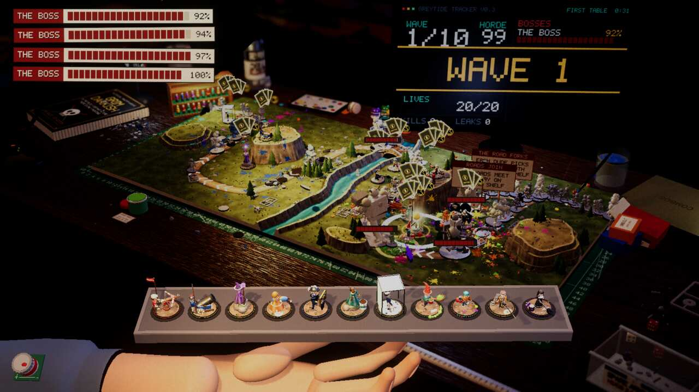

Devlog ·
An audit said the code was sound apart from a handful of leaks; the fixes then showed which leaks were real
A read-only audit of 118,860 lines ranked the game's performance and structure problems, and workers spent the night on them: some fixes cut costs by 90 percent, one changed nothing measurable, and one hunt for garbage-collector pauses ended at the card placer.
The game had grown for three days from many small tasks, and nobody had read all of it at once. So one agent was asked to read the whole Unity code base and say whether it was sound and where it was slow. It ran nothing: every cost in its report is marked as reasoned from the source and from earlier measurements.
The verdict
The auditor counted 554 files and 118,860 lines. Its verdict was that the skeleton is better than most: towers and tables are plug-ins, the crowd code avoids allocating, and performance had been measured rather than guessed. What had gone wrong was the middle. The biggest classes ran past a thousand lines. One enemy type was a bag of about sixty public fields with names like D and HA. Gameplay shared sixteen global settings, one zeroed during a kill and restored so a payout would go elsewhere. There were 738 log calls, 22 private copies of a colour helper, and two random sources, so no bot game could be replayed.
Its sharpest finding was about the numbers. Every crowd measurement so far had used three towers with no cards, while a real table ends with a dozen towers carrying them. It ranked nineteen tasks; ten were filed that night.
The yardstick
The first task was the "before". The worker on the stress demo (issue 454) taught it to place twelve towers with cards and print a timing line per section. Its first twelve-tower run showed no cards, because most towers name no suited card. It added a fixed rotation from the library, and the next screenshot showed card icons over every tower. Twenty-four runs followed: twelve towers added about 0.8 to 1.1 ms of script time. It noted the machine was shared with other workers, so frame times were noisy.

Look at the card fans over the towers: this was the load every later fix was measured against.
Fixes that worked, and fixes that did not
Targeting (issue 456) was the first suspect: every tower sight-checked the crowd every frame. With 100 walkers and twelve towers the worker counted about 161 checks per frame, and after towers kept a good target and searched on a clock, about 12.5: 92 percent fewer. It also wrote that it had started a duplicate batch by mistake and overwritten a baseline log, so that run was redone.
The walking pose (issue 457) went from 1.05 to 0.77 ms of crowd time at 100 enemies on Low. The worker left GPU skinning off because the web was unmeasured; a follow-up (issue 481) measured it, 23.1 to 18.2 ms at 200 enemies, and switched it on. Ragdolls (issue 458) went from about 0.9 to 0.5 ms to build. Redrawing displays only when the picture changed (issue 461) took the game store's screens from 36 uploads a second to 3, and screenshots showed its sign had been overflowing through a shared line-wrap cache.
Two did not pay. The worker on log stack traces (issue 455) found log size and frame times "the same within noise", because the Linux release player wrote no stack lines either way; it merged anyway. The worker on garbage in the core (issue 460) pooled projectiles and ragdoll parts and moved heap growth from about 5.9 to 5.5 KB per frame: the demo fired only about 44 shots, so the garbage came from elsewhere.
The pauses that were not the collector
Long bot runs showed frames of 0.5 to 4 seconds beside full garbage collections, and the build-time worker (issue 384, table builds cut from 6 to 29 seconds to 3 to 7) filed them as a garbage problem. The worker on issue 529 measured the collector: marking took 0 to 3 ms, a forced full collection 5 ms. Every hitch instead followed a freshly built card table. A timer showed the table placer re-running for every tower on every placement, 300 ms each. After caching and re-placing only towers whose neighbours changed, the same 680-second run had no frame over 500 ms.
Housekeeping
The rules self-test (issue 462) has 80 checks. To prove it could fail, the worker changed one expected value and got 79 passed, 1 failed and a non-zero exit. Moving test commands out of the biggest class (issue 463) showed a second stats command silently replacing the first. One seeded random source (issue 525) made four desk games on one seed end with equal lives and leaks. The worker on the copied helpers (issue 526) left its pull request open because it touched files its issue did not name; the lead merged it.
What nobody has checked yet
- Web and Windows builds for the logging, pooling, pose and seeding changes.
- A windowed 60 fps player for the placer fix.
- Run-mode replay with a seed. (The lent-tower payout through the relay was checked after this was written, with no change needed: a borrowed tower's kills still pay the holder.)
- Whether any of this shows in the owner's play: every number comes from bots and stress runs.